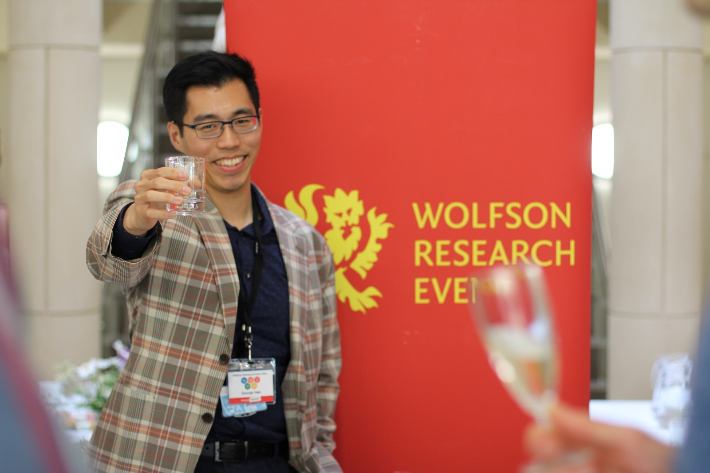

George Han (Zhuang Zhuang Han) — short bio
I'm George Han — biomedical researcher and aspiring data scientist, passionate about bridging wet-lab science with computational methods. I believe the most exciting biology is happening at the intersection of large-scale data and intelligent algorithms.
I care about doing rigorous, reproducible science and communicating it clearly — both to specialists and to curious non-experts.

University of Cambridge
Voracious reader across science, philosophy, and fiction. See ./books for my list.
Building tools that scratch my own itches — mostly data pipelines, visualisations, and small ML experiments.
Strategy games, chess, and anything that requires a good mental model.
Trying to explain hard things clearly. Occasional blog posts when an idea won't leave me alone.